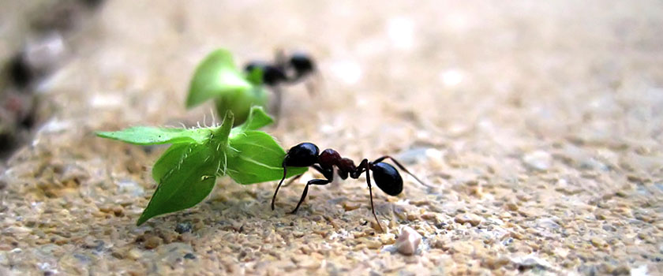

Algemene info over mieren
Mieren hebben zich kunnen aanpassen aan zeer verschillende leefomgevingen. Waar zij voorkomen, zijn mieren de dominante levensvorm op de bodem.
Mieren komen vrijwel overal ter wereld voor. Ze behoren daarmee tot de succesvolste diergroepen.
Veel mierensoorten bouwen hun nest in de bodem of in holle bomen, andere soorten spinnen bladeren aan elkaar om een nest te maken, en weer andere leven in spleten tussen rotsen.
